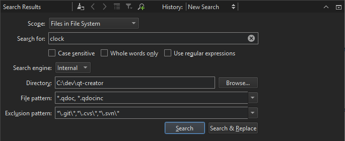

IFindFilter Class
class Core::IFindFilterThe IFindFilter class is the base class for find implementations that are invoked by selecting Edit > Find/Replace > Advanced Find. More...
| Header: | #include <coreplugin/find/ifindfilter.h> |
Public Functions
| virtual QWidget * | createConfigWidget() |
| virtual QKeySequence | defaultShortcut() const |
| virtual QString | displayName() const = 0 |
| virtual void | findAll(const QString &txt, Core::FindFlags findFlags) = 0 |
| virtual QString | id() const = 0 |
| virtual bool | isEnabled() const = 0 |
| virtual bool | isReplaceSupported() const |
| virtual bool | isValid() const |
| virtual void | readSettings(QSettings *settings) |
| virtual void | replaceAll(const QString &txt, Core::FindFlags findFlags) |
| virtual bool | showSearchTermInput() const |
| virtual Core::FindFlags | supportedFindFlags() const |
| virtual void | writeSettings(QSettings *settings) |
Signals
| void | displayNameChanged() |
| void | enabledChanged(bool enabled) |
| void | validChanged(bool valid) |
Static Public Members
| const QList<Core::IFindFilter *> | allFindFilters() |
| QString | descriptionForFindFlags(Core::FindFlags flags) |
| QPixmap | pixmapForFindFlags(Core::FindFlags flags) |
Detailed Description
Implementations of this class add an additional Scope to the Advanced Find dialog. That can be any search that requires the user to provide a text based search term (potentially with find flags like searching case sensitively or using regular expressions). Existing scopes are All Projects that searches from all files in all projects and Files in File System where the user provides a directory and file patterns to search.

To make your find scope available to the user, you need to implement this class, and register an instance of your subclass in the plugin manager.
A common way to present the search results to the user, is to use the shared Search Results pane.
If you want to implement a find filter that is doing a file based text search, you should use Core::BaseTextFind, which already implements all the details for this kind of search, only requiring you to provide an iterator over the file names of the files that should be searched.
If you want to implement a more specialized find filter, you need to:
- Start your search in a separate thread
- Make this known to the Core::ProgressManager, for a progress bar and the ability to cancel the search
- Interface with the shared Search Results pane, to show the search results, handle the event that the user click on one of the search result items, and possible handle a global replace of all or some of the search result items.
Luckily QtConcurrent and the search results pane provide the frameworks that make it relatively easy to implement, while ensuring a common way for the user.
The common pattern is roughly to first implement the actual search within a QtConcurrent based function. That is a function that takes a QFutureInterface<MySearchResult> &future as the first parameter and the other information needed for the search as additional parameters. It should set useful progress information on the QFutureInterface, regularly check for future.isPaused() and future.isCanceled(), and report the search results (possibly in chunks) via future.reportResult.
In the find filter's find() or replaceAll() function, get the shared Search Results window, initiate a new search and connect the signals for handling selection of results and the replace action (see the Core::SearchResultWindow class for details). Start your search implementation via the corresponding QtConcurrent functions. Add the returned QFuture object to the Core::ProgressManager. Use a QFutureWatcher on the returned QFuture object to receive a signal when your search implementation reports search results, and add these to the shared Search Results window.
Member Function Documentation
[signal] void IFindFilter::displayNameChanged()
This signal is emitted when the display name of this find filter changes.
[signal] void IFindFilter::enabledChanged(bool enabled)
This signal is emitted when the enabled state of this find filter changes.
[signal] void IFindFilter::validChanged(bool valid)
This signal is emitted when the valid state of this find filter changes.
[static] const QList<Core::IFindFilter *> IFindFilter::allFindFilters()
Returns a list of find filters.
[virtual] QWidget *IFindFilter::createConfigWidget()
Returns a widget that contains additional controls for options for this find filter.
The widget will be shown below the common options in the Advanced Find dialog. It will be reparented and deleted by the find plugin.
[virtual] QKeySequence IFindFilter::defaultShortcut() const
Returns the shortcut that can be used to open the advanced find dialog with this filter or scope preselected.
Usually return an empty shortcut here, the user can still choose and assign a specific shortcut to this find scope via the preferences.
[static] QString IFindFilter::descriptionForFindFlags(Core::FindFlags flags)
Returns descriptive text labels for the find flags flags.
[pure virtual] QString IFindFilter::displayName() const
Returns the name of the find filter or scope as presented to the user.
This is the name that appears in the scope selection combo box, for example. Always return a translatable string. That is, use tr() for the return value.
[pure virtual] void IFindFilter::findAll(const QString &txt, Core::FindFlags findFlags)
This function is called when the user selected this find scope and initiated a search.
You should start a thread which actually performs the search for txt using the given findFlags (add it to Core::ProgressManager for a progress bar) and presents the search results to the user (using the Search Results output pane). For more information, see the descriptions of this class, Core::ProgressManager, and Core::SearchResultWindow.
See also replaceAll(), Core::ProgressManager, and Core::SearchResultWindow.
[pure virtual] QString IFindFilter::id() const
Returns the unique string identifier for this find filter.
Usually should be something like "MyPlugin.MyFindFilter".
[pure virtual] bool IFindFilter::isEnabled() const
Returns whether the user should be able to select this find filter at the moment.
This is used for the Current Projects scope, for example. If the user has not opened a project, the scope is disabled.
See also enabledChanged().
[virtual] bool IFindFilter::isReplaceSupported() const
Returns whether the find filter supports search and replace.
The default value is false, override this function to return true, if your find filter supports global search and replace.
[virtual] bool IFindFilter::isValid() const
Returns whether the find filter is valid.
See also validChanged().
[static] QPixmap IFindFilter::pixmapForFindFlags(Core::FindFlags flags)
Returns icons for the find flags flags.
[virtual] void IFindFilter::readSettings(QSettings *settings)
Called at startup to read the state of the additional options for this find filter from the settings.
[virtual] void IFindFilter::replaceAll(const QString &txt, Core::FindFlags findFlags)
Override this function if you want to support search and replace.
This function is called when the user selected this find scope and initiated a search and replace. The default implementation does nothing.
You should start a thread which actually performs the search for txt using the given findFlags (add it to Core::ProgressManager for a progress bar) and presents the search results to the user (using the Search Results output pane). For more information see the descriptions of this class, Core::ProgressManager, and Core::SearchResultWindow.
See also findAll(), Core::ProgressManager, and Core::SearchResultWindow.
[virtual] bool IFindFilter::showSearchTermInput() const
Returns whether the find filter wants to show the search term line edit.
The default value is true, override this function to return false, if your find filter does not want to show the search term line edit.
[virtual] Core::FindFlags IFindFilter::supportedFindFlags() const
Returns the find flags, like whole words or regular expressions, that this find filter supports.
Depending on the returned value, the default find option widgets are enabled or disabled. The default is Core::FindCaseSensitively, Core::FindRegularExpression and Core::FindWholeWords.
[virtual] void IFindFilter::writeSettings(QSettings *settings)
Called at shutdown to write the state of the additional options for this find filter to the settings.